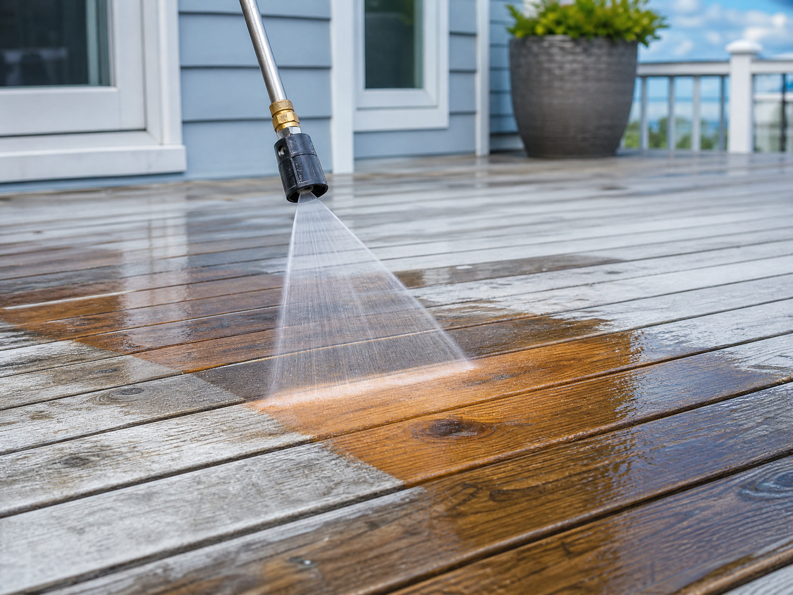
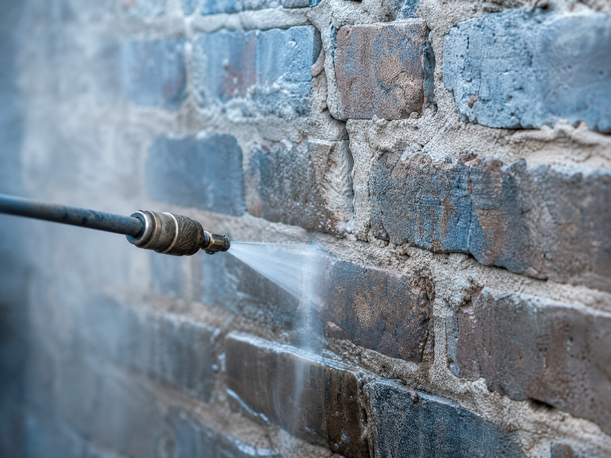

Concrete driveways and sidewalks
Clear debris, pre-treat stains, use a 25 degree nozzle or surface cleaner, and rinse toward drainage. Avoid lingering in one spot.
Need driveway cleaning help?Every project starts with a test spot. If the surface dulls, fuzzes, flakes, or leaks, stop and call a professional.
Clear debris, pre-treat stains, use a 25 degree nozzle or surface cleaner, and rinse toward drainage. Avoid lingering in one spot.
Need driveway cleaning help?Use detergent and low pressure. Spray level or downward, never upward under siding laps. Watch windows, vents, outlets, and oxidation.
Check pro-call warning signs
Use a wide fan, low pressure, and long even passes with the grain. Heavy pressure can scar boards or raise wood fibers.
Review deck safety
Inspect mortar and joints first. Older masonry often needs a gentler cleaning plan than a direct pressure pass.
Ask G&S about masonry cleaningStart with the lowest-risk areas so you can learn how the machine behaves. Save concrete and heavy grime for after your setup is dialed in.